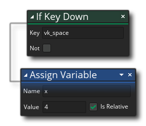

We want to now make the player instance move when the user presses the Arrow Keys on the keyboard. Currently we are adding 4 to the "x" value every game frame, so what we want to do is only add 4 if the keyboard right arrow is being pressed. For that we use the if key down action which will evaluate to either true or false if the given key is being held down, and if it evaluates to true, then we will move the instance by 4. The action can be found in the Mouse and Keyboard section of the action toolbox and you should drag it into the action workspace above the Assign Variable action:
Note that when you drag it near the existing action an area will be highlighted indicating that it can be placed either above or below the action in the chain (in the image above we place it above), and once you drop it you will see that it is connected to the Assign Variable action like this: 
That square chain on the left means that the "if" action will be called and then the Assign Variable action, but that they are independent of each other. We want to change this so that the Assign Variable action will only be called if a key is pressed so now we need to drag it onto the right hand side of the if keyboard down action like this:
Now what we have is the "if" checking for a key and only if it returns true (the key is being held down) will it run the assign variable action. We only need to set the key that is being checked now, so change the "vk_space" value for "vk_right" (the "vk_" variables are special built-in constants that are used to signify different keyboard keys). It should all now look like this:

The conditional we are checking is the value returned by the function "keyboard_check" which returns true if the key (in this case the right arrow) is being held down and false otherwise. Note that the assign variable action is placed to the right to indicate that it is only being run if the conditional check is true, and that this is also reflected in the action list on the left, where the assign variable entry has been tabbed too.
Run your game again (press ) and this time the player instance should do nothing unless you press the right arrow key.
We can expand the current action list now to cover the remaining three directions of up, left and down. Now you could repeat the whole process and add each action, or you could do what we'll do now, which is to copy and paste the actions we have and then edit them. To copy multiple actions, first you have to select them by holding down  /
/  and then left clicking
and then left clicking  on each of the actions we want to copy. Now hold down
on each of the actions we want to copy. Now hold down  /
/  + C to copy them and then
+ C to copy them and then  /
/  + V to paste them. They will automatically be pasted after the previous actions, so you can go ahead and do this three times so that we have a total of four "if" checks:
+ V to paste them. They will automatically be pasted after the previous actions, so you can go ahead and do this three times so that we have a total of four "if" checks:
You can now edit the actions so that you have:
- if right arrow key down (vk_right): x + 4
- if left arrow key down (vk_left): x - 4
- if up arrow key down (vk_up): y - 4
- if down arrow key down (vk_down): y + 4
As you can see, we subtract from x to go left this time, and we have also changed the last two conditionals to change the "y" position instead of the x position, where subtracting from "y" moves up, and adding to "y" moves down. In GameMaker Studio 2 the (0, 0) position is considered as the top left hand corner of your room and the horizontal axis is the x axis and vertical axis is the y axis:
Run the game now (press ) and move the instance with the arrow keys: